Context-Free Language and Pushdown Automata¶
Introduction
对于 \(L=\{a^nb^n|n\geq 0\}\)，可以通过一下方式生成：
- Basis: \(e\in L\)
- Recursion: 如果 \(w\in L\) ，则 \(awb\in L\)
3.1 Context-Free Grammars¶
Definiton
Context-Free Grammar(CFG) 是一个四元组 \(G=(V,\Sigma,R,S)\)，满足：
- \(V\)是一个字母表
- \(\Sigma\subseteq V\) 是终止符号的集合（终止符号是出现在最终结果中的符号，即不包括 \(S\) 等过程符号）
- \(S\in V-\Sigma\) 是开始符号
- \(R\) 是生成规则的集合，是 \((V-\Sigma)\times V^*\) 的一个有限子集
Note
Regular Expression and CFG
- 两者都是 generation devices
- \(L\) 是一个正则语言当且仅当存在正则表达式 \(\alpha\), \(L=L(\alpha)\)
- \(L\) 是一个上下文无关语言(CFL)当且仅当存在 CFG \(G\), \(L=L(G)\)
Theorem
所有正则语言都是上下文无关语言(CFL)
Proof¶
对于一个正则语言对应的DFA \(M=(K,\Sigma,\delta,s,F)\)
构造一个CFG \(G=(V,\Sigma,R,S)\) ，满足：
- \(V=K\cup\Sigma\)
- \(\Sigma = \Sigma\)
- \(S=s\)
- \(R=\{q\rightarrow ap:\delta(q,a)=p\}\cup\{q\rightarrow e:q\in F\}\)
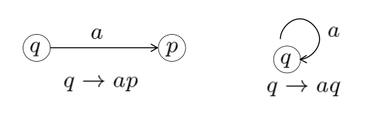
Regular Expression VS CFG¶
| Regular Expression（正则表达式） | Context-Free Grammar（上下文无关文法） | |
|---|---|---|
| 生成工具 (Generation Device) | Regular Expression | Context-Free Grammar |
| 识别工具 (Recognition Device) | Finite Automata (有限自动机, FA) | Pushdown Automata (下推自动机, PDA) |
| 生成语言类型 (Generated Language) | Regular Language (正则语言) | Context-Free Language (CFL, 上下文无关语言) |
| 等价关系 (Equivalence) | FA ↔ Regular Expression | PDA ↔ CFG |
| 非所属语言 (Not in this Class) | Not Regular Language | Not Context-Free Language |
| 判定方法 (Non-Membership Test) | Pumping Lemma for Regular Languages (抽引引理) | Pumping Lemma for CFLs (CFL 抽引引理) |
Remark¶
- 在 \(V-\Sigma\) 中的符号被称为非终止符(nonterminals)，对于所有 \(A\in V-\Sigma\) 和 \(u\in V^*\)，满足 \(A\rightarrow _Gu\Leftrightarrow (A,u)\in R\)
- \(u\Rightarrow _Gv\Leftrightarrow\exists x,y\in V^*,A\in V-\Sigma\)，满足 \(u=xAy,v=xv'y,A\rightarrow _Gv'\)
- \(\Rightarrow^*_G\) 是 \(\Rightarrow_G\) 的自反、传递闭包
- 关于 \(G\) 的Derivation: \(w_0\Rightarrow_G w_1\Rightarrow_G … \Rightarrow_G w_n\)，\(n\)是derivation的长度
- 由 \(G\) 产生的语言: \(L(G)=\{w\in\Sigma^*:S\Rightarrow^*_G w\}\)
Note
证明CFG \(G\) 和 语言 \(L\) 等价(e.g. \(L\) 是 context-free): \(w\in L\Leftrightarrow w\in L(G)\) 。
可使用归纳法。
3.2 Parse Tree¶
CFG \(G=(S,V,\Sigma,R)\) 的一个 derivation 可以用语法树(parse tree)来表示:
- 叶节点：终止符
- 根节点：开始符
- 节点：\(V\) 中的元素
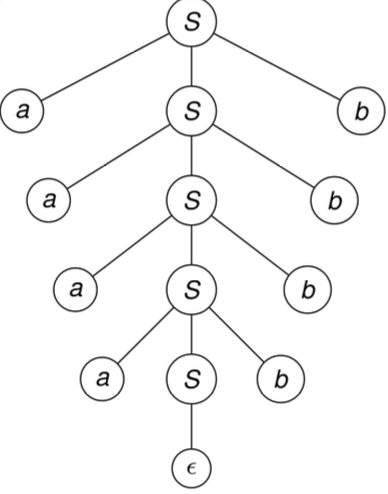
其中：
- 叶节点构成输出
- 终止符只出现在叶节点
- 过程变量只能出现在中间节点
- 最终的字符串由终止符从左到右组合生成
Definition
定义 derivations 的相似性，假设：
- CFG \(G=(V,\Sigma,R,S)\)
- \(D=x_1\Rightarrow x_2\Rightarrow x_3\Rightarrow…\Rightarrow x_n,~~~x_i\in V^*,x_1\in V-\Sigma, x_n\in \Sigma^*\)
- \(D'=x_1'\Rightarrow x_2'\Rightarrow x_3'\Rightarrow…\Rightarrow x_n',~~~x_i'\in V^*,x_1'\in V-\Sigma, x_n'\in \Sigma^*\)
则 \(D \text{ precedes } D' (D\prec D') \Leftrightarrow \exists 1\leq k\leq n\) ，满足
- 对于所有 \(i\neq k\) ，\(x_i=x_i'\)
- \(x_{k-1}=x’_{k-1}=uAvBw\) 其中 \(u,v,w\in V^*，A,B\in V-\Sigma\)
- \(x_k=uyvBw\) 其中 \(A\rightarrow y\in R\)
- \(x_k'=uAvzw\) 其中 \(B\rightarrow z\in R\)
- \(x_{k+1}=x'_{k+1}=uyvzw\)
\(D\) 和 \(D'\) 相似(similar) \(\Leftrightarrow\) \((D,D')\) 属于 \(\prec\) 的reflexive, symmetric, transitive闭包。
- 相似性是一种等价关系。
- 在相似性下属于同一等价类的推导具有相同的语法树。
- 每个语法树包含一个在 \(\prec\) 关系下最左推导(Leftmost derivation)或最右推导。最左推导是指始终将生成规则应用于最左符号的推导。
Theorem
对于一个 CFG \(G=(V,\Sigma,R,S)\)，令 \(A\in V-\Sigma,w\in\Sigma ^*\)，则以下语句等价：
- \(A\Rightarrow^*w\)
- 存在一个语法树根节点为 \(A\) ，field 为 \(w\)
- 存在一个最左推导 \(A\overset{L^*}\Rightarrow w\)
- 存在一个最右推导 \(A\overset{R^*}\Rightarrow w\)
Note
一个字符串可以有多个最左或最右推导。(歧义语法)
Definition
一种语法中，当某些单词具有两个语法树时，称该语法存在歧义(ambiguous)。
- Example

3.3 Pushdown Automata¶
对于有限状态机，可以理解为由以下部分组成：
- 输入序列
- 有限的状态控制
- 操作：Read: 检查输入，移动到序列的下一个；Think: 改变状态
相对的，Pushdown Automata 多了一个栈，即增加存储功能：
- 输入序列
- 有限的状态控制
- 一个栈
- 操作：Read: 检查输入，移动到序列的下一个；Think: 改变状态，读写栈
Definition
一个 PDA(pushdown automata) 是一个六元组 \(M=(K,\Sigma,\Gamma,\Delta,s,F)\)
- \(K\) 是一个有限的状态集合
- \(\Sigma\) 是一个字母表（输入符）
- \(\Gamma\) 是一个字母表（输出符）
- \(s\in K\) 是初始状态
- \(F\subseteq K\) 是终止状态集合
- \(\Delta\) 是转移关系，是 \((K\times(\Sigma \cup \{e\})\times \Gamma^*)\times(K\times \Gamma^*)\) 的子集
Example
对于 \(L=\{wcw^R|w\in\{a,b\}^*\}\)，有PDA \(M\)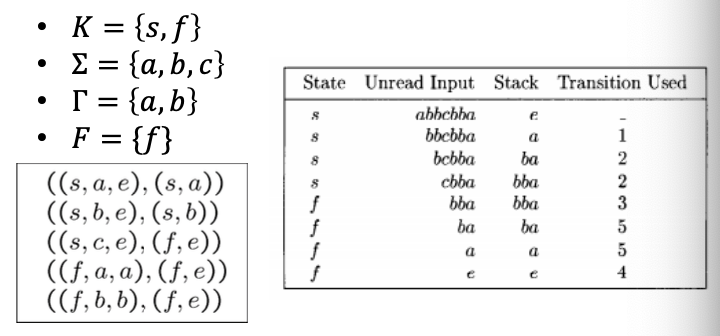
Note
FA可以被认为是永远不会操作栈的PDA
同样，PDA中也可以存在空转移(e-transition)，比如 \(((p,e,\beta),(q,\gamma))\) 。对于存在空转移的PDA，由于空转移可以发生在任何时候，这类机器被认为是 nondeterministic。
- Example: \(L(M)=\{ww^R|\{a,b\}^*\}\)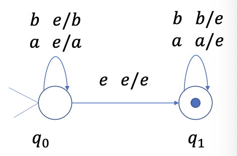
Definition
定义 PDA 的 configuration: \(K\times\Sigma^*\times\Gamma^*\) 的一个成员 \((p,x,\alpha)\vdash_M(q,y,\zeta)\) 当且仅当存在某个转移关系 \(((p,a,\beta),(q,\gamma))\) 满足：
- \(x=ay,a\in\Sigma\cup \{e\}\)
- \(\alpha=\beta\eta\)
- \(\zeta=\gamma\eta \text{ for some } \eta\in\Gamma^*\)
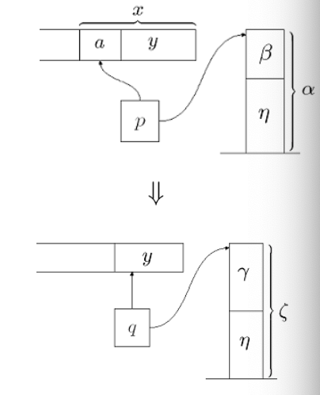
\(\vdash^*_M\) 是 \(\vdash_M\) 在 reflexive 和 transitive 上的闭包。
一个PDA \(M\) 可以接收一个字符串 \(w\in \Sigma^*\) 当且仅当（以下描述等价）：
- 对于某个\(p\in F,(s,w,e)\vdash_M^*(p,e,e)\)
- 存在一个configuration的序列 \(C_0,…,C_n(n>0)\) , 对于某个\(p\in F\), \((s,w,e)\vdash_M C_1\vdash_M…\vdash_M C_n=(p,e,e)\)
- \(L(M)=\{w|(s,w,e)\vdash_M^* (p,e,e)\text{ for some state } p\in F\}\)
3.4 PDA and CFL¶
Theroem
PDA接受的语言类就是CFL的语言类。
- Lemma 1: 每个 context-free 语言都可以被某个 PDA 接受
Proof
对于一个 CFG \(G=(V,\Sigma,R,S)\), 对应构造一个 PDA \(M=(K,\Sigma,\Gamma,\Delta,s,F)\)
- \(M\) 仅有两个状态：开始状态 \(p\) ，结束状态 \(q\)
- 栈字母表 \(\Gamma=V\)
- \(\Delta\) 包含以下转移关系： \(((p,e,e),(q,S))\); \(((q,e,A),(q,x))\) 对于所有 \(A\rightarrow x\in R\); \(((q,a,a),(q,e))\) 对于所有 \(A\in \Sigma\)
这样构造出的 \(M\) 可以模拟输入字符串的最左推导。
Claim: 令 \(w\in \Sigma^*\) 和 \(\alpha\in(V-\Sigma)V^*\cup\{e\}\)，则 \(S\overset{L^*}\Rightarrow w\alpha \Leftrightarrow (q,w,S)\vdash^*_M (q,e,\alpha)\)
接下来先证明 Claim 的 \(\Rightarrow\)
- Basic step: 推导长度为0，即 \(w=e,\alpha=S\)，则\((q,e,S)\vdash^*_M(q,e,S)\) 显然成立
- Induction hypothesis: 假设 \(S\overset{L^*}\Rightarrow w\alpha \Rightarrow (q,w,S)\vdash^*_M (q,e,\alpha)\) 对于 \(\leq n\) 步的推导成立。
- induction step:

- Lemma 2: 如果一个语言可以被 PDA 接受，那么这个语言是 context-free语言。
Proof
先定义简单 PDA：如果一个转移关系 \(((q,\alpha,\beta),(p,\gamma))\) 属于PDA，则 \(q\) 不是开始状态且 \(\beta\in \Gamma,|\gamma|\leq 2\)。也就是所，简单PDA会一直消耗栈顶的符号，把它换成 \(e\)、单栈符号或双栈符号。
接下来把PDA转化成简单PDA：
记PDA \(M=(K,\Sigma,\Gamma,\Delta,s,F)\) ，则对应构造一个简单PDA \(M'=(K',\Sigma,\Gamma\cup\{Z\},\Delta',s',\{f'\})\) 使得 \(L(M)=L(M')\) 。其中 \(s',f'\notin K\) 是两个新的状态， \(Z\notin \Gamma\) 是栈底符号。
对于转移关系 \(\Delta'\)：
- 开始转移: \(((s',e,e),(s,Z))\)
- 结束转移: \(((f,e,Z),f',e)\)
- 其他转移都对应替换成满足条件的转移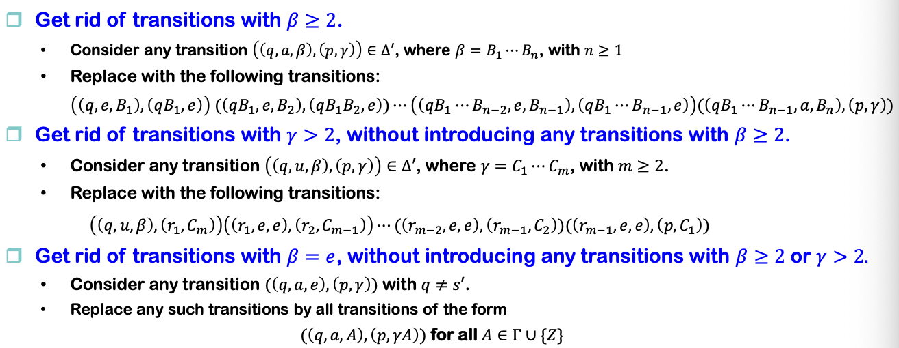
最后从简单PDA中构建出对应的CFG，即构造CFG \(G=(V,\Sigma,R,S)\) 满足 \(L(G)=L(M')\) 。
定义 nonterminals \(<q,A,p>\) : 当 \(M\) 处于状态 \(q\) 且栈顶元素为 \(A\) 时，\(M\) 从栈中移除 \(A\) 可以进入状态 \(p\)。
x取 \(V=\{S\}\cup\Sigma\cup\{<q,A,p>|\forall q,p\in K,A\in\Gamma\cup\{e,Z\}\}\)
根据以下四条规则取 \(R\) :
- 对于原来PDA的开始状态 \(s\) 和新的结束状态 \(f'\) : 有 \(S\rightarrow <s,Z,f'>\)
- 对于每一个转移 \(((q,a,B),(r,C))\) , 其中 \(q,r\in K',a\in\Sigma\cup\{e\},B,C\in\Gamma\cup\{e\}\) , 对于每一个状态 \(p\in K'\) , 对应添加规则 \(<q,B,p> \rightarrow a<r,C,p>\)
- 对于每一个转移 \(((q,a,B),(r,C_1C_2))\) , 其中 \(q,r\in K',a\in\Sigma\cup\{e\},B\in\Gamma\cup\{e\},C_1,C_2\in\Gamma\) , 对于每一对状态 \(p,p'\in K'\) , 对应添加规则 \(<q,B,p> \rightarrow a<r,C_1,p'><p',C_2,p>\)
- 对于每一个 \(q\in K\) , 添加规则 \(<q,e,q>\rightarrow e\)
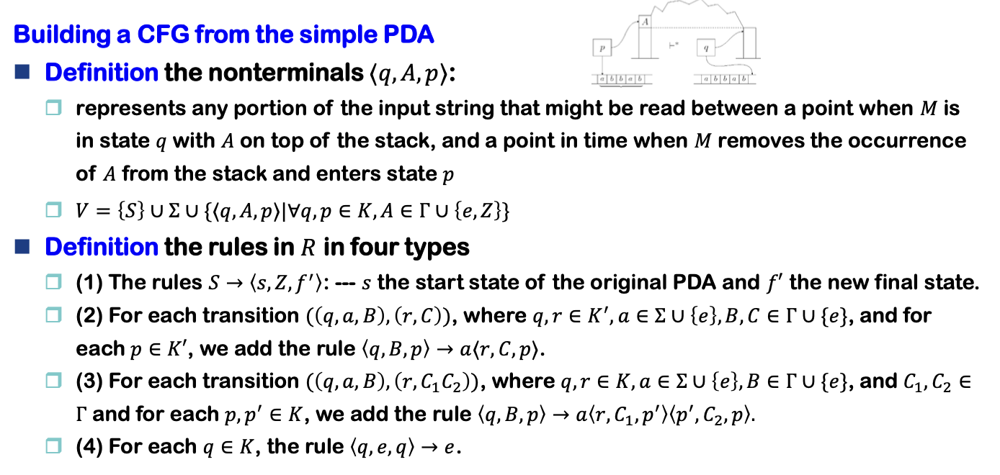
Claim
对于任何 \(q,p\in K, A\in \Gamma \cup \{e\}\) , 以及 \(x\in\Sigma^*\),满足
\[ <q,A,p>\Rightarrow^*_G x\Leftrightarrow (q,x,A)\vdash^*_M (p,e,e) \]
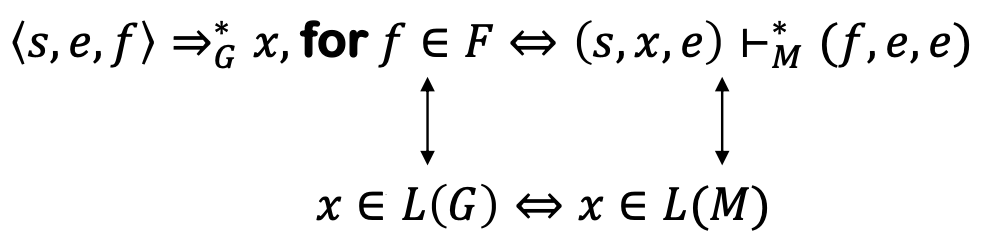
根据Claim可以证明Lemma2。
3.5 Languages that are and are not CF¶
Theorem
CFL 在 union, concatenation, Kleene star 操作上是封闭的。
Proof
- 构造 \(G_1=(V_1,\Sigma_1,R_1,S_1),G_2=(V_2,\Sigma_2,R_2,S_2)\)
- 假设两者的非终止符不同，即 \(V_1-\Sigma_1\) 和 \(V_2-\Sigma_2\)
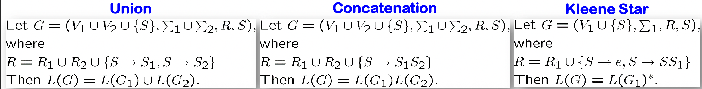
Theorem
CFL 在 intersection, complementation 操作下不封闭。
Example
- \(L_1=\{a^nb^nc^m:m,n\geq 0\}=\{a^nb^n:n\geq 0\}\circ c^*\)
- \(L_2=\{a^mb^nc^n:m,n\geq 0\}=a^*\circ\{b^nc^n:n\geq 0\}\)
- 则 \(L_1\cap L_2=\{a^nb^nc^n:n\geq 0\}\) 不是 CFL
Theorem
CFL 和一个正则语言的 intersection 是 CFL。
Proof
对两个语言都分别构造PDA和FA，其中正则语言对应的FA不会操作栈。
记 \(M_1=(K_1,\Sigma,\Gamma_1,\Delta_1,s_1,F_1)\), \(M_2=(K_2,\Sigma,\delta,s_2,F_2)\) 。
然后构造一个 PDA \(M = (K,\Sigma,\Gamma,\Delta_1,s_1,F_1)\) ，其中：
- \(K=K_1\times K_2\)
- \(\Gamma = \Gamma_1\)
- \(s=(s_1,s_2)\)
- \(F=F_1\times F_2\)
- \(\Delta\) : 对于每一个 \(((q_1,a,\beta),(p_1,\gamma))\in\Delta_1,q_2\in K\) ，都有 \((((q_1,q_2),a,\beta),((p_1,\delta(q_2,a)),\gamma))\in\Delta\)
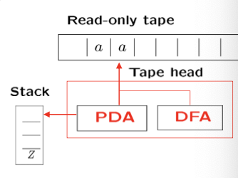
Pumping Theorem¶
假设一个 CFG \(G=(V,\Sigma,R,S)\) ，其中 \(\Sigma = \{a,b,c\},V=\{S,a,b,c\}\) , \(R\) 包括以下规则 \(S\rightarrow aAa, C\rightarrow S, A\rightarrow bBb,B\rightarrow cCc\)
则对于一个字符串比如 \(abcabccbacba\) :
- 如果字符串足够长，语法树将非常庞大，因此至少会包含一条极长的路径。
- 该路径中某些非终结符会出现两次，正如本例中 \(𝐵\) （及其他非终结符）的重复出现。
- 利用路径上 \(𝐵\) 的两次出现，我们可以将字符串按如下方式分割为子串 \(𝑢、𝑣、𝑥、𝑦、𝑧\)：
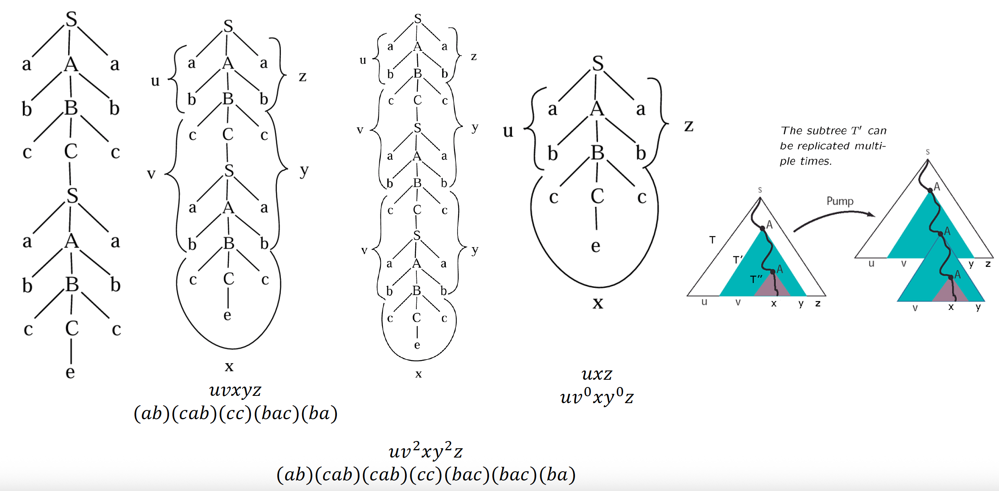
Lemma
高度为 \(ℎ\) 的 \(𝐺\) 的任何语法树的生成树长度至多为 \(𝜙(𝐺)^ℎ\) 。
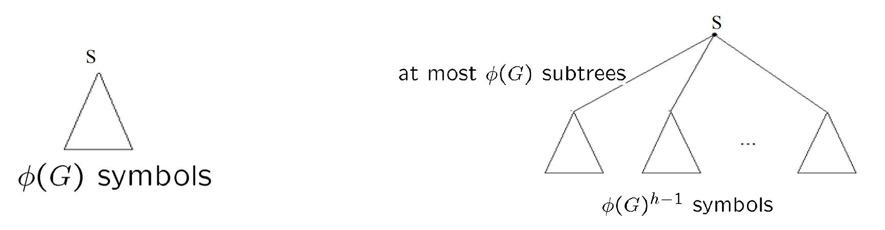
Pumping Theorem
记 CFG \(G=(V,\Sigma,R,S)\) , 则任何长度大于 \(\phi(G)^{|V-\Sigma|}\) 的字符串 \(w\in L(G)\) ，都可以被写成 \(w=uvxyz\) ，其中：
- \(|vy|\geq 1\)
- \(uv^nxy^nz\in L(G)\) 对于任何 \(n\geq 0\) 成立
Proof
记一个字符串为 \(w\) , 满足 \(|w|>\phi(G)^{|V-\Sigma|}\)。取一个根节点为 \(S\) ，能够生成 \(w\) 的具有最小叶节点数的语法树，记 \(T\) 为语法树的高度。
则根据 Lemma 有 \(T>|V-\Sigma|\) ，因此存在一条长度至少为 \(|V-\Sigma|+1\) , 节点数至少为 \(|V-\Sigma|+2\) 的路径。
根据鸽笼原理，路径上至少有两个节点的符号是相同的。 此时如果 \(vy=e\) , 则一定存在一个语法树有更少的叶节点，但是已经假设这是叶节点最小的语法树，矛盾，证明完毕。
Note
Pumping Theorem 用于证明一个语言不是 CF。
任何字母表只有单个字符的CFL都是正则语言。